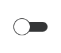

Switch QML Type
Switch button that can be toggled on or off. More...
| Import Statement: | import QtQuick.Controls |
| Inherits: |
Properties
- position : real
- visualPosition : real
Detailed Description

Switch is an option button that can be dragged or toggled on (checked) or off (unchecked). Switches are typically used to select between two states. For larger sets of options, such as those in a list, consider using SwitchDelegate instead.
Switch inherits its API from AbstractButton. For instance, the state of the switch can be set with the checked property.
ColumnLayout { Switch { text: qsTr("Wi-Fi") } Switch { text: qsTr("Bluetooth") } }
See also Customizing Switch and Button Controls.
Property Documentation
position : real |
This property holds the logical position of the thumb indicator.
The position is expressed as a fraction of the indicator's size, in the range 0.0 - 1.0. The position can be used for example to determine whether the thumb has been dragged past the halfway point. For visualizing a thumb indicator, the right-to-left aware visualPosition should be used instead.
See also visualPosition.
visualPosition : real |
This property holds the visual position of the thumb indicator.
The position is expressed as a fraction of the indicator's size, in the range 0.0 - 1.0. When the control is mirrored, the value is equal to 1.0 - position. This makes the value suitable for visualizing the thumb indicator taking right-to-left support into account. In order to for example determine whether the thumb has been dragged past the halfway point, the logical position should be used instead.
See also position.